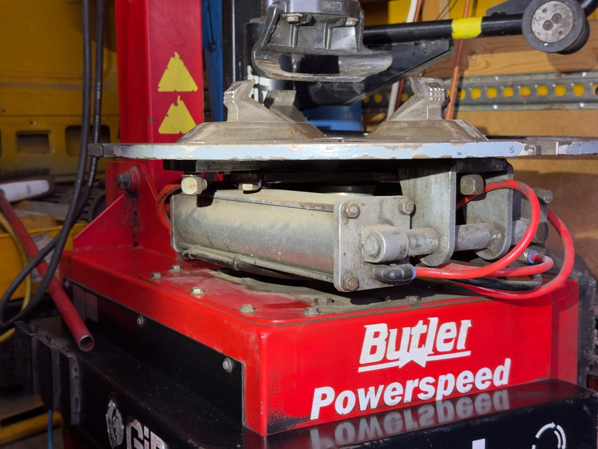

Dlaczego z nami
Dostępni 24/7
Do awarii przyjeżdżamy całą dobę, na wymianę — o umówionej godzinie.
18 lat doświadczenia
Tyle lat pracujemy w branży motoryzacyjnej.
Uczciwe ceny
Cenę i ewentualne dopłaty znasz przed wizytą.
Dwa terminy w roku
Granicą jest średnia temperatura dobowa ok. 7°C. Poniżej mieszanka letnia twardnieje i traci przyczepność.
Z letnich na zimowe
Gdy temperatura spada poniżej 7°C — w Trójmieście zwykle od połowy października do końca listopada.
Bieżnik zimą: min. 4 mmZ zimowych na letnie
Gdy przez kilka dni jest powyżej 7°C — zwykle od połowy marca do końca kwietnia.
Bieżnik latem: min. 3 mmCo dokładnie robimy
Wymiana opon
Przełożenie opon na felgach z wyważeniem.
Wymiana kół
Zamiana kompletnych kół z wyważeniem.
Kontrola bieżnika
Mierzymy głębokość i oceniamy zużycie.
Utylizacja
Na życzenie zabieramy zużyte opony do utylizacji.

Trzy kroki do nowych opon
Zadzwoń lub napisz na WhatsApp
Podajesz adres, auto i rozmiar opon. Możesz od razu wysłać zdjęcie uszkodzenia.
Przyjeżdżamy na miejsce
Do awarii całą dobę, 7 dni w tygodniu. Na wymianę o umówionej godzinie.
Wymieniamy i jedziesz dalej
Montaż, wyważenie, kontrola ciśnienia. Wymiana kompletu trwa zwykle 30–45 minut.
Pytania o tę usługę
Kiedy zmienić opony na zimowe?
Gdy średnia temperatura dobowa spada poniżej ok. 7°C — zwykle od połowy października.
Kiedy wrócić na letnie?
Gdy przez kilka dni jest stabilnie powyżej 7°C — zwykle od połowy marca.
Czy obsługujecie opony run-flat?
Tak, za dopłatą 50 zł. Nie kodujemy natomiast czujników ciśnienia TPMS.
Ile trwa wymiana?
Zwykle 30–45 minut na komplet, zależnie od auta.
Kilka aut pod jednym adresem?
Kilka aut pod jednym adresem to jeden dojazd i możliwy rabat. Zadzwoń albo napisz — przygotujemy wycenę.